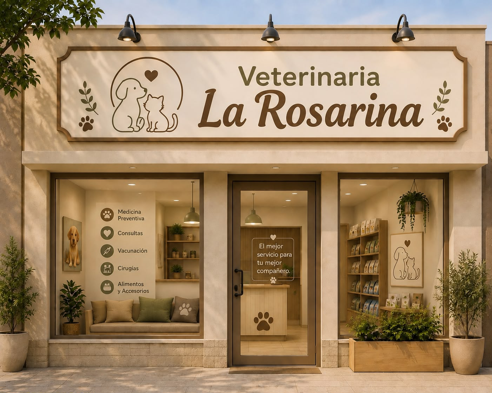

Atención integral veterinaria en Rosario
Brindamos el mejor servicio para tu mejor compañero
Pedir un turnoNuestros servicios
Medicina Preventiva
Controles periódicos y planes de prevención para cuidar la salud de tu mascota a lo largo de toda su vida.
Consultas
Atención clínica general con profesionales matriculados, para cualquier consulta o urgencia.
Vacunación
Aplicamos el esquema de vacunas recomendado para perros y gatos, con registro en libreta sanitaria.
Cirugías
Quirófano propio para castraciones y cirugías programadas, con seguimiento post-operatorio.
Alimentos y Accesorios
Contamos con alimento balanceado y accesorios para el cuidado diario de tu mascota.
Nuestros profesionales
Dr. Federico Rodriguez
Especialista en Medicina Clínica
Dr. Lucas Samuel Beltran
Especialista en Cirugía
Dra. Micaela Calviño
Especialista en Odontología
Dr. Nicolás Vicentín
Especialista en Dermatología
Dra. Silvina Soledad Aguilar
Especialista en Traumatología
Por qué elegirnos

- Atención personalizada y trato cercano con cada familia.
- Equipo de profesionales matriculados y en constante capacitación.
- Instalaciones cómodas pensadas para reducir el estrés de la mascota.
Horarios de atención
| Día | Mañana | Tarde |
|---|---|---|
| Lunes a viernes | 08:00 a 13:00 | 16:00 a 20:00 |
| Sabados | 09:00 a 12:00 | Cerrado |
| Urgencias | 24hs | 24hs |